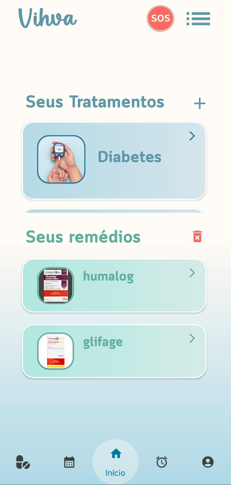
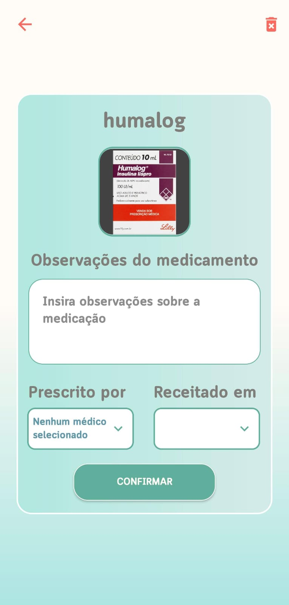

Inicio
Gerenciamento de medicamentos e enfermidades:
Registre suas condições de saúde e os medicamentos em uso
diretamente no seu perfil.
Adicione observações, datas de prescrição e, se o médico
for usuário do Vihva Medical Center,
visualize também o nome do profissional
responsável pela prescrição.